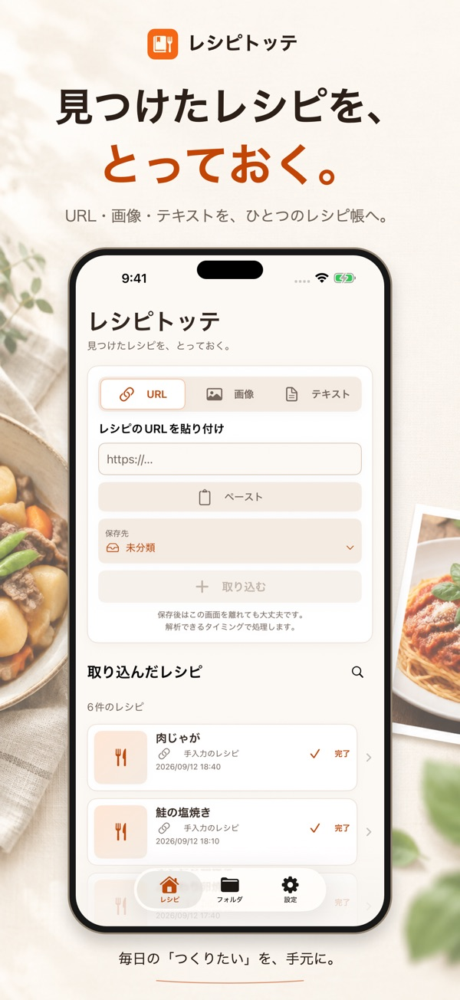
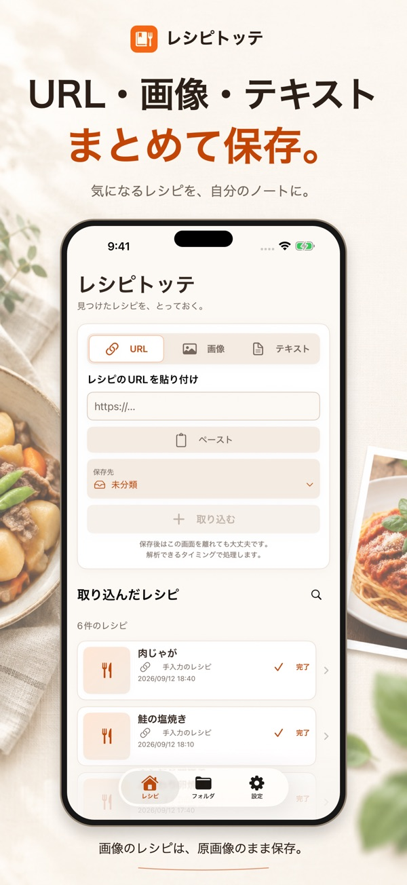
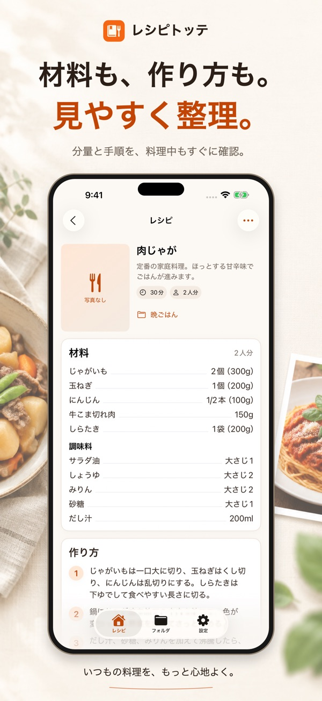

見つけた場所から保存
Safariなどの共有メニューやURLの貼り付けから取り込みます。画像は原画像、テキストは原文のまま保存できます。
レシピ保存・管理アプリ
Webで見つけた料理、画像のレシピ、メモした文章。レシピトッテなら、ひとつのレシピ帳に保存して、作りたいときに探せます。

特徴
Safariなどの共有メニューやURLの貼り付けから取り込みます。画像は原画像、テキストは原文のまま保存できます。
晩ごはん、お弁当、週末の料理。フォルダやサブフォルダに分けて、共有時にも保存先を選べます。
料理名・材料・保存した文章を検索。メモの追記、内容の編集、元URLや画像の共有にも対応します。
はじめて使う方へ
Webページの共有メニューからレシピトッテへ。アプリ内でURL・画像・テキストを指定しても保存できます。
フォルダやサブフォルダへ整理。決まっていなければ未分類へ保存し、あとで移動できます。
料理名や材料で検索して、保存したレシピを表示。取り込んだ内容は元のレシピと照合してください。


原画像をそのまま保存し、レシピ名だけを文字認識します。画像をタップして拡大できます。
動画内の内容は解析しません。外部サイトの表示状態やログインの必要性によっては、取り込めない場合や追加操作が必要な場合があります。
必要ありません。iOS 17以降に対応します。Web本文の整理には通信と送信の許可が必要です。
バージョン1.1.2から、他のアプリから共有するときにもフォルダやサブフォルダを選べます。